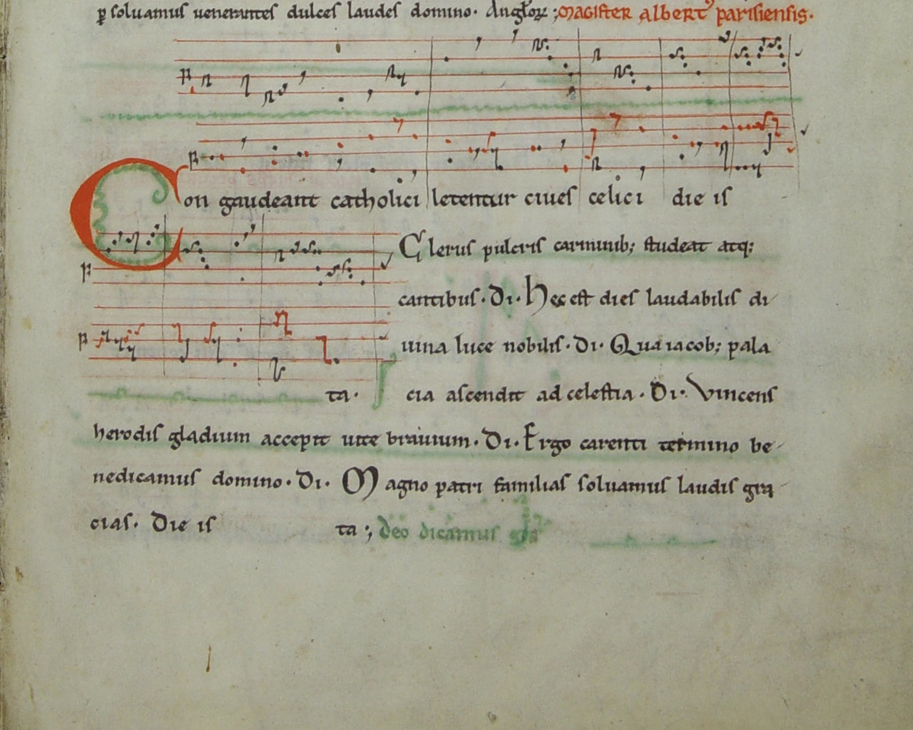

Op weg naar Santiago da Compostella:
Middeleeuwse Pelgrimsliederen uit voornamelijk Spaanse Muziek Handschriften
Doelgroep:
Gevorderde amateurs en (pre-)professionals
Datum:
Datum ligt nog niet vast. Zomer 2025
Kosten:
217 Euro per persoon
Omschrijving:
Als de zomer aanbreekt bereidt vrijwel iedereen zich voor op de vakantie. Ook in de middeleeuwen werd veel gereisd en om de pas en de zin erin te houden werd er vaak gezongen. De reizen die de middeleeuwer maakte dienden vaak voor bezoek aan verre familie, als boodschapper voor hooggeplaatste mensen, als oorlogspad (kruistochten!) of als boetedoening: de pelgrimsreizen. Nog steeds is Santiago da Compostella een belangrijke bedevaartsplaats. In deze driedaagse workshop verkennen we enkele overgeleverde meerstemmige pelgrimsliederen uit de Codex Calixtinus, aangevuld met liederen uit de Codex Las Huelgas, het Llibre Vermeil en de Cantigas de Santa Maria. Intonatie, balans en expressie zijn de leerdoelen.